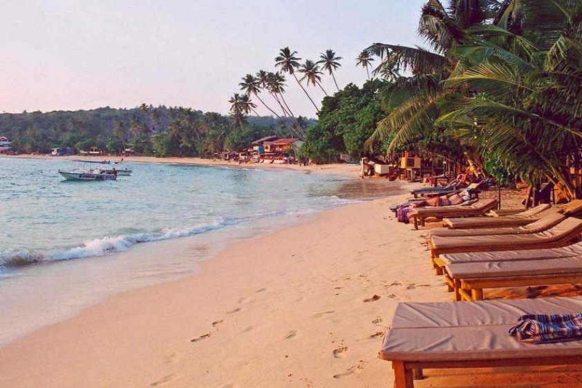
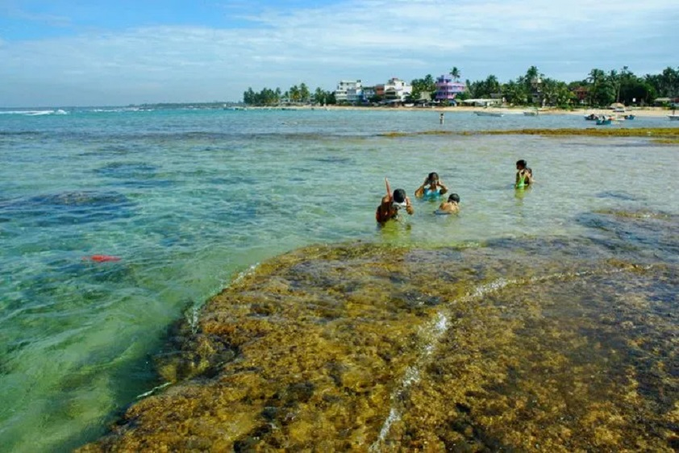

1. Kosgoda Turtle Hatchery
Turtles are reptiles of the order Chelonii. Therefore, they are also called chelonians by researchers and conservationists.
Chelonians are characterized by the special bony shell or carapace, which is developed from their ribs and acts as a shield.
They are an old group with the very first proto-turtles having evolved over 220 million years ago in the Triassic Era. The
order of Chelonii, also known as the Testudines, has three members in the group: turtles, tortoises, and terrapins.
2. Relax in Hikkaduwa Beach

Ever since the 1960s, the beach town of Hikkaduwa has been a major tourist hotspot, mainly because of the pristine Hikkaduwa
Beach. Known for its palm-fringed landscape with alluring waters, the beach is perfect for any traveler looking for recreation,
leisure, rest, and relaxation. Many water sports entice the adrenaline junkie with snorkeling, diving, surfing, and many more.
If you are looking for a more low-key vacation, the beach is perfect for the entire family to have a picnic, frolic in its waters,
or play a bit of beach volleyball. Hikkaduwa Beach is a stretch of endless fun.
3. Walk Around Hikkaduwa National Park

The Hikkaduwa National Park has long been known to be one of the most kaleidoscopic attractions of the southern coast of the island.
Boasting a myriad of coral, along with an array of marine species, the reef is a strip that allows one to understand just how diverse
Sri Lanka is in terms of its wildlife. The marine park serves as one of the three marine national parks on the island, which extends to
a depth of around 5 meters. While it is not known to many, the national park, especially the reef, acts as one of the major protectors of
the Hikkaduwa Beach, as it does not allow the beach to erode.
.jpg)